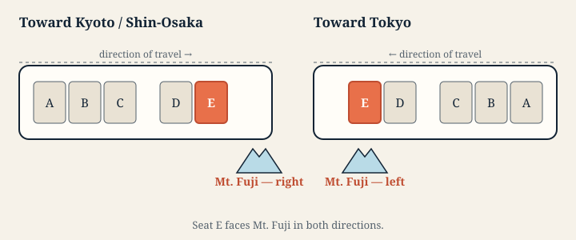

Which side. Heading to Kyoto or Shin-Osaka, Mt. Fuji is on the right — Seat E. Coming back to Tokyo it is on the left, and the seat letter is still E. Seat letters do not change with direction; the mountain simply sits north of the track.
Green Car. The equivalent window seat is Seat D.
How long. Roughly three to four minutes, around Shin-Fuji.
What the pass actually covers
The Tokaido Shinkansen runs three services on the same track, so the view from the window is identical on all three. What differs is how many times you stop, and therefore when you reach Mt. Fuji.
- Nozomi — fastest, fewest stops. Pass holders need a separate special ticket to ride it.
- Hikari — included. A few more stops.
- Kodama — included. Stops everywhere, including Shin-Fuji itself.
Kodama is the slowest way to Kyoto and the best way to see the mountain: it stops at Shin-Fuji, so Mt. Fuji is beside you while the train is standing still.
The slow train is the one that stops where the views are
Several of the best window views sit right beside a station, and the faster your train, the less of them you get. On a Nozomi they are a blur measured in seconds. On a Kodama you are stationary in front of them.
Kakegawa Castle is the clearest case. A white keep a short walk from Kakegawa Station, and in the current timetable 62 Kodama call at Kakegawa while no Hikari and no Nozomi stop there at all. Passing at speed it is a little over ten seconds, split either side of the station. On a Kodama coming into Kakegawa the castle stays in the window for something like half a minute, slipping behind buildings and back out again, and then you are stopped. Odawara Castle works the same way, with Kodama and some Hikari calling at Odawara.
So the trade is not simply slower for cheaper. A Japan Rail Pass puts you on the only trains that stop where several of these views are.

Mt. Fuji times, by train
Every train below is covered by the Japan Rail Pass, and every one of them stops at Shin-Fuji. The times are that station's own scheduled times, not an average — the spread between trains is wider than the viewing window itself, so an average would be worse than useless.
Select a train number to open its own window timeline — every view it passes, each with a time and a seat side, worked out from that train’s schedule.
Toward Kyoto and Shin-Osaka
Mt. Fuji is on your right, in Seat E. Every train here stops at Shin-Fuji, so the mountain is beside you while the train is standing still.
| Train | From | Departs | At Shin-Fuji | Journey so far |
|---|---|---|---|---|
| Kodama 801 | Tokyo | 06:30 | 07:39 | 69 min |
| Kodama 803 | Tokyo | 06:57 | 08:07 | 70 min |
| Kodama 805 | Tokyo | 07:27 | 08:37 | 70 min |
| Kodama 807 | Tokyo | 07:57 | 09:07 | 70 min |
| Kodama 809 | Tokyo | 08:27 | 09:37 | 70 min |
| Kodama 811 | Tokyo | 08:57 | 10:07 | 70 min |
| Kodama 813 | Tokyo | 09:27 | 10:37 | 70 min |
| Kodama 815 | Tokyo | 09:57 | 11:07 | 70 min |
| Kodama 817 | Tokyo | 10:27 | 11:37 | 70 min |
| Kodama 819 | Tokyo | 10:57 | 12:08 | 71 min |
| Kodama 821 | Tokyo | 11:27 | 12:37 | 70 min |
| Kodama 823 | Tokyo | 11:57 | 13:08 | 71 min |
| Kodama 825 | Tokyo | 12:27 | 13:37 | 70 min |
| Kodama 827 | Tokyo | 12:57 | 14:08 | 71 min |
| Kodama 829 | Tokyo | 13:27 | 14:37 | 70 min |
| Kodama 831 | Tokyo | 13:57 | 15:08 | 71 min |
| Kodama 833 | Tokyo | 14:27 | 15:37 | 70 min |
| Kodama 835 | Tokyo | 14:57 | 16:08 | 71 min |
| Kodama 837 | Tokyo | 15:27 | 16:37 | 70 min |
| Kodama 839 | Tokyo | 15:57 | 17:08 | 71 min |
| Kodama 841 | Tokyo | 16:27 | 17:37 | 70 min |
| Kodama 843 | Tokyo | 16:57 | 18:08 | 71 min |
| Kodama 845 | Tokyo | 17:27 | 18:37 | 70 min |
| Kodama 847 | Tokyo | 17:57 | 19:08 | 71 min |
| Kodama 849 | Tokyo | 18:27 | 19:37 | 70 min |
| Kodama 851 | Tokyo | 18:57 | 20:08 | 71 min |
| Kodama 853 | Tokyo | 19:27 | 20:37 | 70 min |
| Kodama 855 | Tokyo | 19:57 | 21:07 | 70 min |
| Kodama 857 | Tokyo | 20:27 | 21:35 | 68 min |
| Kodama 909 | Tokyo | 21:15 | 22:25 | 70 min |
| Kodama 911 | Tokyo | 21:45 | 22:48 | 63 min |
| Kodama 913 | Tokyo | 22:12 | 23:11 | 59 min |
Toward Tokyo
Mt. Fuji is on your left, in the same Seat E.
| Train | From | Departs | At Shin-Fuji | Journey so far |
|---|---|---|---|---|
| Kodama 904 | Shizuoka | 06:22 | 06:35 | 13 min |
| Kodama 908 | Hamamatsu | 06:20 | 06:56 | 36 min |
| Kodama 912 | Shizuoka | 07:02 | 07:13 | 11 min |
| Kodama 914 | Hamamatsu | 06:43 | 07:22 | 39 min |
| Kodama 918 | Hamamatsu | 06:55 | 07:47 | 52 min |
| Kodama 800 | Gifu-Hashima | 06:30 | 08:22 | 112 min |
| Kodama 802 | Nagoya | 07:38 | 09:10 | 92 min |
| Kodama 804 | Nagoya | 08:08 | 09:41 | 93 min |
| Kodama 806 | Nagoya | 08:38 | 10:13 | 95 min |
| Kodama 808 | Shin-Osaka | 07:54 | 10:41 | 167 min |
| Kodama 810 | Nagoya | 09:38 | 11:10 | 92 min |
| Kodama 812 | Shin-Osaka | 08:54 | 11:41 | 167 min |
| Kodama 814 | Nagoya | 10:38 | 12:13 | 95 min |
| Kodama 816 | Shin-Osaka | 09:54 | 12:41 | 167 min |
| Kodama 818 | Nagoya | 11:38 | 13:10 | 92 min |
| Kodama 820 | Shin-Osaka | 10:54 | 13:41 | 167 min |
| Kodama 822 | Nagoya | 12:38 | 14:13 | 95 min |
| Kodama 824 | Shin-Osaka | 11:54 | 14:41 | 167 min |
| Kodama 826 | Nagoya | 13:38 | 15:10 | 92 min |
| Kodama 828 | Shin-Osaka | 12:54 | 15:41 | 167 min |
| Kodama 830 | Nagoya | 14:38 | 16:11 | 93 min |
| Kodama 832 | Shin-Osaka | 13:54 | 16:41 | 167 min |
| Kodama 834 | Nagoya | 15:38 | 17:11 | 93 min |
| Kodama 836 | Shin-Osaka | 14:54 | 17:41 | 167 min |
| Kodama 838 | Nagoya | 16:38 | 18:11 | 93 min |
| Kodama 840 | Shin-Osaka | 15:54 | 18:41 | 167 min |
| Kodama 842 | Nagoya | 17:38 | 19:11 | 93 min |
| Kodama 844 | Shin-Osaka | 16:54 | 19:41 | 167 min |
| Kodama 846 | Nagoya | 18:38 | 20:13 | 95 min |
| Kodama 848 | Shin-Osaka | 17:54 | 20:41 | 167 min |
| Kodama 850 | Nagoya | 19:38 | 21:05 | 87 min |
| Kodama 852 | Shin-Osaka | 18:54 | 21:41 | 167 min |
| Kodama 854 | Nagoya | 20:46 | 22:21 | 95 min |
Riding a Hikari? Open your train's timeline
Hikari passes Mt. Fuji without stopping, so there is no station time to quote and we will not invent one. Open a train and the guide works the passing time out from that train's own schedule.
Toward Kyoto and Shin-Osaka
- Hikari 631 from Tokyo
- Hikari 633 from Tokyo
- Hikari 635 from Tokyo
- Hikari 637 from Tokyo
- Hikari 639 from Tokyo
- Hikari 641 from Tokyo
- Hikari 643 from Tokyo
- Hikari 645 from Tokyo
- Hikari 647 from Tokyo
- Hikari 649 from Tokyo
- Hikari 651 from Tokyo
- Hikari 653 from Tokyo
- Hikari 655 from Tokyo
- Hikari 657 from Tokyo
- Hikari 659 from Tokyo
- Hikari 661 from Tokyo
- Hikari 663 from Tokyo
- Hikari 665 from Tokyo
- Hikari 667 from Tokyo
- Hikari 669 from Tokyo
- Hikari 701 from Tokyo
- Hikari 703 from Tokyo
- Hikari 705 from Tokyo
- Hikari 707 from Tokyo
- Hikari 709 from Tokyo
- Hikari 711 from Tokyo
- Hikari 713 from Tokyo
- Hikari 715 from Tokyo
- Hikari 717 from Tokyo
- Hikari 719 from Tokyo
- Hikari 721 from Tokyo
- Hikari 733 from Shin-Yokohama
Toward Tokyo
- Hikari 630 from Nagoya
- Hikari 632 from Nagoya
- Hikari 634 from Shin-Osaka
- Hikari 636 from Shin-Osaka
- Hikari 638 from Shin-Osaka
- Hikari 640 from Shin-Osaka
- Hikari 642 from Shin-Osaka
- Hikari 644 from Shin-Osaka
- Hikari 646 from Shin-Osaka
- Hikari 648 from Shin-Osaka
- Hikari 650 from Shin-Osaka
- Hikari 652 from Shin-Osaka
- Hikari 654 from Shin-Osaka
- Hikari 656 from Shin-Osaka
- Hikari 658 from Shin-Osaka
- Hikari 660 from Shin-Osaka
- Hikari 662 from Shin-Osaka
- Hikari 664 from Shin-Osaka
- Hikari 666 from Shin-Osaka
- Hikari 668 from Shin-Osaka
- Hikari 700 from Hiroshima
- Hikari 702 from Okayama
- Hikari 704 from Okayama
- Hikari 706 from Okayama
- Hikari 708 from Okayama
- Hikari 710 from Okayama
- Hikari 712 from Okayama
- Hikari 714 from Okayama
- Hikari 716 from Okayama
- Hikari 718 from Okayama
- Hikari 720 from Okayama
- Hikari 722 from Okayama
Before you board
Seat E is the Fuji-side window position in ordinary cars. On a reserved-seat ticket you can choose it in advance; a Japan Rail Pass includes seat reservations on eligible Hikari and Kodama services at no additional charge. Nozomi requires a separate special ticket for pass holders. For current pass conditions and fares, check the official sources: japanrailpass.net and JR Central. If Seat E is sold out, do not go and stand in someone else's row — aim instead for the brief Left-Side Fuji from Seat A, or for Lake Hamana, which works from either side.
If the mountain is hidden
Mt. Fuji is often invisible, and clear winter mornings are by far the best odds. The ride does not end there: the same window carries castles, a lake the train crosses on a low bridge, tea fields, a pagoda in Kyoto, and a few large mysteries that people spend the trip arguing about.